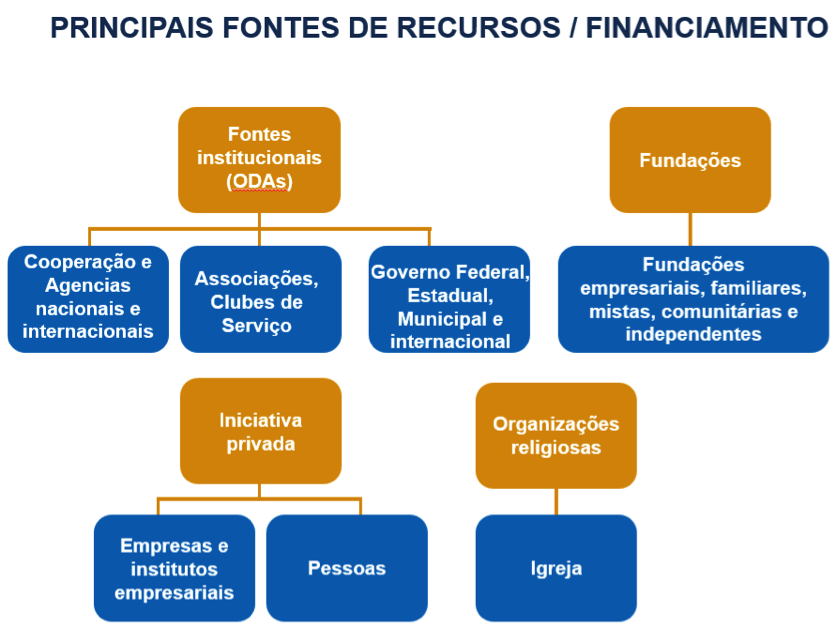
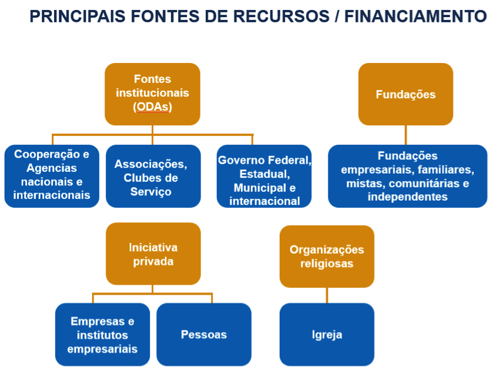

Fontes para Mobilização de Recursos
25 de Julho de 2016 às 13:59
Nestes artigos que irei escrever serão analisadas as fontes, estratégias, táticas e ferramentas utilizadas pelas Organizações da Sociedade Civil - OSCs para obter os recursos de diferentes fontes. Com a revisão destes conceitos, definições e análise da origem destas palavras, espera-se facilitar o entendimento do tema e aprimorar a captação e a mobilização de recursos.
Fontes de recursos podem ser entendidas de forma diferente, dependendo da área e do contexto utilizado. Resume-se na procura de locais, organizações ou pessoas que possam aportar recursos a um empreendimento. Uma empresa que queira iniciar ou ampliar seu negócio irá pensar em bancos, sócios, venda de ações, BNDES (Governo), etc. O próprio Governo, em seu orçamento, chama de fontes de recursos a classificação da receita segundo a destinação legal dos recursos arrecadados. Na área social, são as organizações públicas ou privadas mais as pessoas que irão aportar os recursos para as OSCs.
Cada fonte tem características próprias que serão detalhadas no segundo artigo, bem como as melhores formas de acessar esta fonte e quais as ferramentas ou táticas que facilitarão o acesso.
A palavra “estratégia” vem do grego antigo strategos (de stratos, "exército", e ago, "liderança" ou "comando"), tendo significado inicialmente "a arte do general", designando o comandante militar na antiga democracia ateniense.
Atualmente, estratégia é uma das palavras mais utilizadas na vida empresarial e encontrada abundantemente na literatura especializada. À primeira vista, parece tratar-se de um conceito consolidado, de sentido universal, consensual e único, contudo não é o que ocorre.
Segundo o dicionário Aurélio, estratégia é a arte de explorar condições e caminhos favoráveis com o fim de alcançar objetivos. Mintzberg a sintetiza como sendo uma forma de pensar no futuro, integrada no processo decisório, com base em um procedimento formalizado e articulador de resultados. Estes dois conceitos mais simples serão utilizados ao longo destes artigos.
Tática, também oriunda do grego taktike ou techne, a arte de manobrar (tropa), é qualquer elemento componente de uma estratégia, com a finalidade de se atingir a meta desejada num empreendimento qualquer. Enquanto a estratégia busca a visão "macro", de conjunto ou, por assim dizer, sistêmica, relativa ao empreendimento, a tática se ocupa da visão “micro”, no sentido elementar ou particular em relação ao todo. Conforme a perspectiva de um líder, o que parece ser uma tática para um gerente pode ser uma estratégia para um diretor. Por este motivo, algumas estratégias de mobilização de recursos podem ser entendidas como táticas e vice e versa, o que não invalida a análise que segue.
Ferramenta é um utensílio, dispositivo ou mecanismo físico ou intelectual utilizado por trabalhadores das mais diversas áreas para realizar alguma tarefa. Inicialmente, o termo era utilizado para designar objetos de ferro ou outro material para fins doméstico ou industrial. Em função do exposto, uma ferramenta pode ser definida como um dispositivo que forneça uma vantagem mecânica ou mental para facilitar a realização de tarefas diversas.
Intimamente relacionadas, ferramenta, tática e estratégia se complementam, sendo tática o plano de curto prazo e estratégia, o de longo prazo, que possibilita o processo de mobilização. Numa comparação mais simples, tática e ferramenta seriam o ‘como’ realizar determinada função, em oposição à estratégia, mais próxima de ‘o que’ se deve realizar, as decisões a serem tomadas.
As fontes de mobilização de recursos
Segundo Cruz; Estraviz (2000, p. 86), existem sete fontes financiadoras de recursos para o OSC esplanadas no quadro baseado no modelo de Carol Daugherty e Linda Kendrix:
Desse modo, sugiro para facilitar o entendimento, uma nova divisão em quatro tipos de fontes de recursos:

Referências
ABONG. Um novo marco legal para as ONGs no Brasil – Fortalecendo a cidadania e a participação democrática. São Paulo: ABONG, 2007.
ARMANI, Domingos Antônio. Mobilizar para Transformar A Mobilização de Recursos nas Organizações da Sociedade Civil. São Paulo: Peirópolis, 2008.
______ . O Sentido do planejamento na mobilização de recursos. In: Rogério Renato Silva; Paula Lubambo. (Org.). Mobilizar a experiência do programa de formação em mobilização de recursos da Aliança Interage. Recife: Aliança Interage, p. 71-74, 2008.
BARBOSA, Maria Nazaré Lins.; OLIVEIRA, Carolina Felippe. Manual de ONGs: guia prático de orientação jurídica. Rio de Janeiro: Editora FGV, 2001.
BUARQUE, Aurélio Buarque. Dicionário Aurélio da língua portuguesa. 5ª ed. Curitiba: Ed. Positivo, 2010.
CRUZ, Celia Meirelles; ESTRAVIZ, Marcelo. Captação de diferentes recursos para organizações sem fins lucrativos. São Paulo: Instituto Fonte e Global, 2000.
HOUAISS, Antônio. Dicionário Houaiss da Língua Portuguesa. Disponível em:
MEREGE, Luis Carlos. Terceiro Setor: a arte de administrar sonhos. São Paulo: Plêiade, 2009.
__________. Realidade e perspectivas do terceiro setor no Brasil. Artigo publicado em material didático do curso Princípios e Técnicas de Captação de Recursos, GVpec, da EAESP-FGV. São Paulo, julho de 2001.
MINTZBERG, Henry. Ascensão e Queda do Planejamento Estratégico. Porto Alegre: Bookman, 2004.
MINTZBERG, Henry; AHLSTRAND, B.; LAMPEL, J. Safári de estratégia: Um roteiro pela selva do planejamento estratégico. 2.ed., Porto Alegre: Artmed, 2010.
PAES, José Eduardo Sabo. Fundações e entidades de interesse social: aspectos jurídicos, administrativos, contábeis e tributários. 5. ed. rev., atual. e ampl. de acordo com a Lei nº 10.406, de 10.1.2002 (Novo Código Civil brasileiro). Brasília: Brasília Jurídica, 2004.
PEREIRA, Custódio. Captação de recursos: Fund Raising. São Paulo: Ed. Mackenzie, 2001.
SZAZI, Eduardo. Terceiro setor: regulação no Brasil. São Paulo: Gife e Fundação Peirópolis, 2001.
Michel Freller empreendedor social, palestrante, professor, consultor e facilitador. Mestre em Administração pela PUC-SP, atua junto as OSCs com ênfase em planejamento e mobilização de recursos com e sem incentivos. Fundador da Criando Consultoria ltda.
Fontes de recursos podem ser entendidas de forma diferente, dependendo da área e do contexto utilizado. Resume-se na procura de locais, organizações ou pessoas que possam aportar recursos a um empreendimento. Uma empresa que queira iniciar ou ampliar seu negócio irá pensar em bancos, sócios, venda de ações, BNDES (Governo), etc. O próprio Governo, em seu orçamento, chama de fontes de recursos a classificação da receita segundo a destinação legal dos recursos arrecadados. Na área social, são as organizações públicas ou privadas mais as pessoas que irão aportar os recursos para as OSCs.
Cada fonte tem características próprias que serão detalhadas no segundo artigo, bem como as melhores formas de acessar esta fonte e quais as ferramentas ou táticas que facilitarão o acesso.
A palavra “estratégia” vem do grego antigo strategos (de stratos, "exército", e ago, "liderança" ou "comando"), tendo significado inicialmente "a arte do general", designando o comandante militar na antiga democracia ateniense.
Atualmente, estratégia é uma das palavras mais utilizadas na vida empresarial e encontrada abundantemente na literatura especializada. À primeira vista, parece tratar-se de um conceito consolidado, de sentido universal, consensual e único, contudo não é o que ocorre.
Segundo o dicionário Aurélio, estratégia é a arte de explorar condições e caminhos favoráveis com o fim de alcançar objetivos. Mintzberg a sintetiza como sendo uma forma de pensar no futuro, integrada no processo decisório, com base em um procedimento formalizado e articulador de resultados. Estes dois conceitos mais simples serão utilizados ao longo destes artigos.
Tática, também oriunda do grego taktike ou techne, a arte de manobrar (tropa), é qualquer elemento componente de uma estratégia, com a finalidade de se atingir a meta desejada num empreendimento qualquer. Enquanto a estratégia busca a visão "macro", de conjunto ou, por assim dizer, sistêmica, relativa ao empreendimento, a tática se ocupa da visão “micro”, no sentido elementar ou particular em relação ao todo. Conforme a perspectiva de um líder, o que parece ser uma tática para um gerente pode ser uma estratégia para um diretor. Por este motivo, algumas estratégias de mobilização de recursos podem ser entendidas como táticas e vice e versa, o que não invalida a análise que segue.
Ferramenta é um utensílio, dispositivo ou mecanismo físico ou intelectual utilizado por trabalhadores das mais diversas áreas para realizar alguma tarefa. Inicialmente, o termo era utilizado para designar objetos de ferro ou outro material para fins doméstico ou industrial. Em função do exposto, uma ferramenta pode ser definida como um dispositivo que forneça uma vantagem mecânica ou mental para facilitar a realização de tarefas diversas.
Intimamente relacionadas, ferramenta, tática e estratégia se complementam, sendo tática o plano de curto prazo e estratégia, o de longo prazo, que possibilita o processo de mobilização. Numa comparação mais simples, tática e ferramenta seriam o ‘como’ realizar determinada função, em oposição à estratégia, mais próxima de ‘o que’ se deve realizar, as decisões a serem tomadas.
As fontes de mobilização de recursos
Segundo Cruz; Estraviz (2000, p. 86), existem sete fontes financiadoras de recursos para o OSC esplanadas no quadro baseado no modelo de Carol Daugherty e Linda Kendrix:
- empresas, indivíduos, fundações, governo, geração de renda, instituições religiosas e eventos especiais.
Desse modo, sugiro para facilitar o entendimento, uma nova divisão em quatro tipos de fontes de recursos:
- iniciativa privada, que compreende empresas, indivíduos (pessoas físicas) e institutos corporativos, muitas vezes assemelhados aos departamentos de responsabilidade social das empresas e às fundações empresariais;
- fundações, que podem ser: familiares, empresariais, independentes, comunitárias ou mistas;
- organizações religiosas;
- fontes institucionais, incluindo: governos (internacionais, nacional/federal, estaduais e municipais), agências internacionais (bilaterais e multilaterais), organizações comunitárias, clubes de serviço e outras associações

Referências
ABONG. Um novo marco legal para as ONGs no Brasil – Fortalecendo a cidadania e a participação democrática. São Paulo: ABONG, 2007.
ARMANI, Domingos Antônio. Mobilizar para Transformar A Mobilização de Recursos nas Organizações da Sociedade Civil. São Paulo: Peirópolis, 2008.
______ . O Sentido do planejamento na mobilização de recursos. In: Rogério Renato Silva; Paula Lubambo. (Org.). Mobilizar a experiência do programa de formação em mobilização de recursos da Aliança Interage. Recife: Aliança Interage, p. 71-74, 2008.
BARBOSA, Maria Nazaré Lins.; OLIVEIRA, Carolina Felippe. Manual de ONGs: guia prático de orientação jurídica. Rio de Janeiro: Editora FGV, 2001.
BUARQUE, Aurélio Buarque. Dicionário Aurélio da língua portuguesa. 5ª ed. Curitiba: Ed. Positivo, 2010.
CRUZ, Celia Meirelles; ESTRAVIZ, Marcelo. Captação de diferentes recursos para organizações sem fins lucrativos. São Paulo: Instituto Fonte e Global, 2000.
HOUAISS, Antônio. Dicionário Houaiss da Língua Portuguesa. Disponível em:
MEREGE, Luis Carlos. Terceiro Setor: a arte de administrar sonhos. São Paulo: Plêiade, 2009.
__________. Realidade e perspectivas do terceiro setor no Brasil. Artigo publicado em material didático do curso Princípios e Técnicas de Captação de Recursos, GVpec, da EAESP-FGV. São Paulo, julho de 2001.
MINTZBERG, Henry. Ascensão e Queda do Planejamento Estratégico. Porto Alegre: Bookman, 2004.
MINTZBERG, Henry; AHLSTRAND, B.; LAMPEL, J. Safári de estratégia: Um roteiro pela selva do planejamento estratégico. 2.ed., Porto Alegre: Artmed, 2010.
PAES, José Eduardo Sabo. Fundações e entidades de interesse social: aspectos jurídicos, administrativos, contábeis e tributários. 5. ed. rev., atual. e ampl. de acordo com a Lei nº 10.406, de 10.1.2002 (Novo Código Civil brasileiro). Brasília: Brasília Jurídica, 2004.
PEREIRA, Custódio. Captação de recursos: Fund Raising. São Paulo: Ed. Mackenzie, 2001.
SZAZI, Eduardo. Terceiro setor: regulação no Brasil. São Paulo: Gife e Fundação Peirópolis, 2001.
Michel Freller empreendedor social, palestrante, professor, consultor e facilitador. Mestre em Administração pela PUC-SP, atua junto as OSCs com ênfase em planejamento e mobilização de recursos com e sem incentivos. Fundador da Criando Consultoria ltda.
Publicado por

Notícias mais populares
Gestão
Em agosto de 2017, a revista ÉPOCA e o Instituto Doar divulgaram a primeira ediç&...
Contexto e tendências
Criado para tornar mais transparentes as parcerias entre a administração públic...
Profissional captador
A captação de recursos é fundamental para a sustentabilidade de uma organiza&cc...